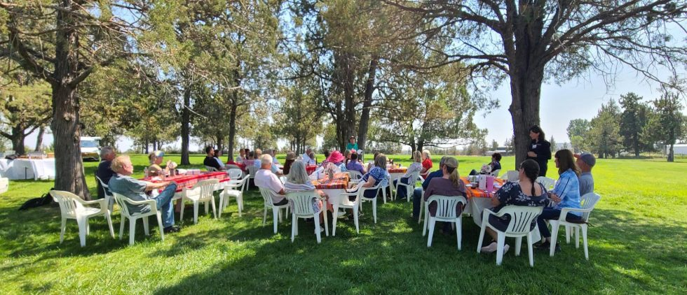

Connect, Learn, and Support the Herd
NWCF hosts annual events and educational programs that bring camelid owners, breeders, and veterinarians together across the Pacific Northwest. The research we fund leads to better health outcomes for llamas and alpacas throughout the region.
Our events are the foundation's primary source of funding. Every dollar raised goes directly to camelid veterinary research and scholarships, with no overhead. When you attend, you are investing in the health and well-being of every camelid in the Pacific Northwest.

Upcoming Events
No events are currently scheduled.
Dates and locations for the next annual fundraiser and Meet & Greet events will be announced here as soon as they are confirmed. Sign up to be the first to know.
Get Event AnnouncementsWhat to Expect
- Silent auction with donated items from breeders, vendors, and supporters
- Camelid demonstrations and showcase animals
- Research updates from OSU and WSU scientists
- Networking with veterinarians and owners from across the region
- Q&A with the Research Committee

Vet Q&A Sessions
Get your camelid health questions answered by experienced veterinarians from OSU and WSU in a relaxed, accessible format.
Research Updates
Hear directly from the researchers your donations support. Learn what is being studied, what has been discovered, and what is next.
Community Connection
Meet other llama and alpaca owners from across the Pacific Northwest. Share experiences, exchange contacts, and build lasting relationships.
“The [recent NWCF] event was both informative and enjoyable, and it was really inspiring to see the dedication and passion that your team brings to the world of camelid care and research… The work you are doing is so vital to the well-being of these animals, and we really enjoyed learning about the research initiatives underway and how we might be able to support your efforts. Thank you for your time and for the incredible work your foundation is doing.”
— Kate & Eric Carr, Four Roots Ranch Animal Sanctuary, Bend, Oregon
Past Events
Annual Fundraiser & Silent Auction
Crescent Moon Ranch — Central Oregon
Llama and alpaca enthusiasts gathered at Crescent Moon Ranch for an afternoon of community, learning, and camelid appreciation. Green grass and a light breeze under the trees made for a perfect setting to reconnect with old friends and meet new ones. Research updates, camelid demonstrations, and a spirited silent auction rounded out the day, with proceeds supporting veterinary research at OSU and WSU.
Ways to Support Our Events
Stay Informed
Event dates and locations are announced each year. Contact us to be added to the mailing list.
Contact UsDonate an Auction Item
Fiber products, camelid equipment, veterinary consultations, and local experiences are all welcome in our annual silent auction.
Contact Us to DonateSponsor an Event
Sponsorships support camelid health research while gaining visibility with our community of owners, breeders, and vets.
Sponsorship InquiriesBring NWCF to Your Event
We welcome invitations to exhibit, present, or participate at camelid events throughout the Northwest. Contact us to discuss how we can be involved.
Contact UsEducational Materials
NWCF produces materials about camelid health research for distribution at events and shows. Contact us to request materials for your organization.
Request MaterialsGet Event Announcements
Be the first to know when event dates and registration open. Join our mailing list and we'll reach out as soon as details are confirmed.
Join the ListHelp Us Keep Going
Event proceeds fund the research grants and scholarships at the heart of our mission. Your donation makes the science possible whether you attend or not.